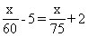
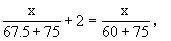
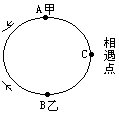
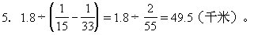
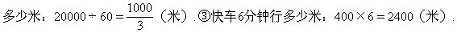
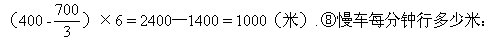
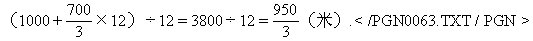
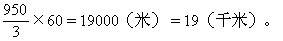
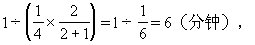
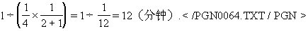

习题七解答
1.解法1：（60×5+75×2）÷（75—60）=30（分钟），60×（30+5）=2100（米），
或75×（30—2）=2100（米）。
解法2：设路程为x米。

x＝2100（米）。
2.解法l：①乙丙相遇时间：
（60＋75）×2÷（67.5—60）=36（分钟）。
②东西两镇之间相距多少米？
（67.5＋75）×36=5130（米）
解法2：设东西两镇之间相距x米，

x=5130（米）。
3.A、B共行3个全程，则有：
解法1：设全程为x公里，
（x-32+x-64）÷2＝32，
x=64＋32÷2，
∴x＝80（公里）。
解法2：设全程为x公里
x-32=（64+32）÷2，
x=80（公里）.
解法3：64—32＝32（公里），32+32＋32÷2=32+32+16＝80（公里）。
4.乙从相遇点C跑回B点时，甲从C过B到A，他比乙多跑了100米.乙从B到C时，甲从A到C，说明A到C比B到C多100米.跑道周长400米，所以B到C是100米，A到C是200米。

乙每跑100米，甲就多跑100米.要使甲、乙从C点开始，再次相遇，甲要比乙多跑一圈，也就是说，乙跑400米时，甲跑800米与乙第二次相遇，再加上甲从A到C的200米，甲共跑了1000米。

6.①快车每分钟行多少米：24000÷60=400（米）.②中速车每分钟行

相差米数：
（2400—2000）÷（10—6）=100（米）。
⑦三辆汽车与骑车人的路程差：

⑨慢车每小时行多少千米：

7.设用字母a表示甲速，用字母b表示乙速（a＞b）。
（a+b）×4=（a—b）×12
a∶b=2∶1（甲、乙速度比是2∶1）

